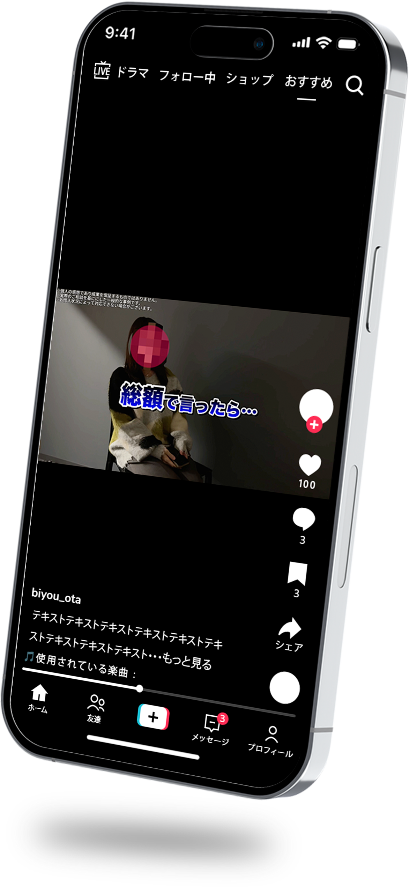

TikTok等の動画広告用に、債務整理サービスの訴求動画を制作。ニュースの切り抜きのような構成で信頼性を高め、自然な流れでオファーへ誘導する設計としています。
媒体・サイズ
TikTok / Meta 広告 （16:9）
ターゲット
借金に悩みを抱えている20〜40代男女。「本当に相談して大丈夫か」と不安を抱えている層。
目的
債務整理サービスの新規リード獲得
構成設計
冒頭3秒の離脱防止を目的に、あえて広告感を抑えた導入を設計。 従来はUGC風クリエイティブで課題解決を図っていたが、本制作ではニュース番組の切り抜きのような構成を採用し、自然な視聴継続を促しました。 後半で具体的なオファーを提示し、スムーズにクリックへ誘導する流れとしています。
クリエイティブ意図
冒頭で“広告ではない”と感じさせる設計 / ニュース風の演出により客観性と信頼性を担保 / 誇張表現を避け、リアルなトーンで構成 / 終盤でベネフィットを整理しCTAを強調
デザイン
ベースフォントはゴシック体を使用し、視認性を重視。 強調箇所はテレビテロップを想起させる配色・装飾で情報の優先順位を明確化しました。 BGM・効果音も報道番組を意識した演出とし、世界観の統一を図っています。
担当範囲・制作期間
リサーチ : 1.5時間企画構成 : 1時間台本作成 : 1時間デザイン設計 : 1時間編集 : 3時間
使用ツール
Illustrator / CupCut